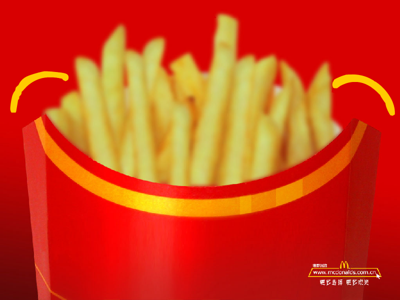
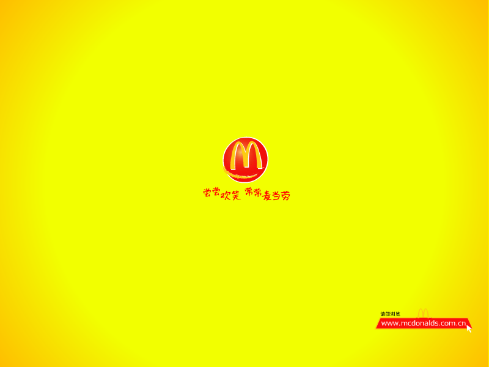
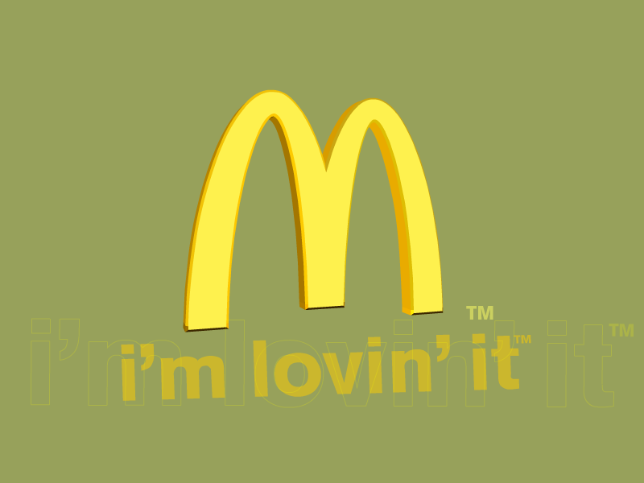
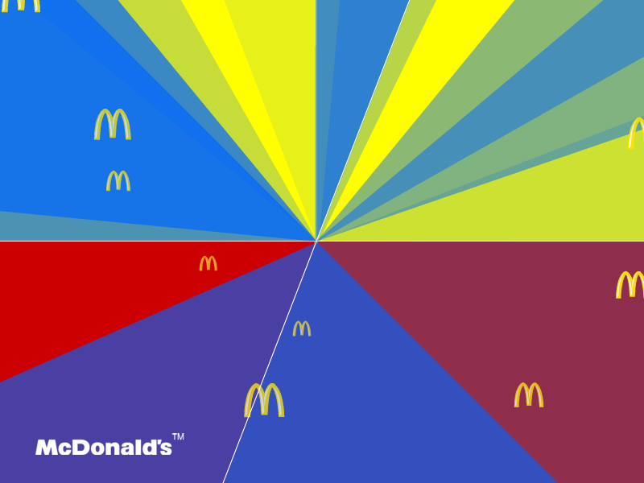
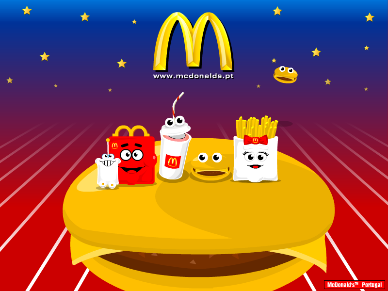
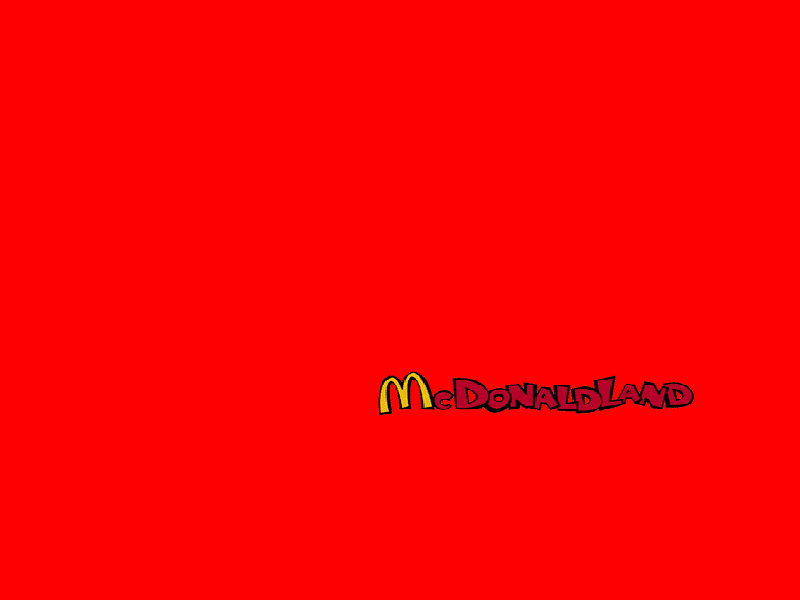
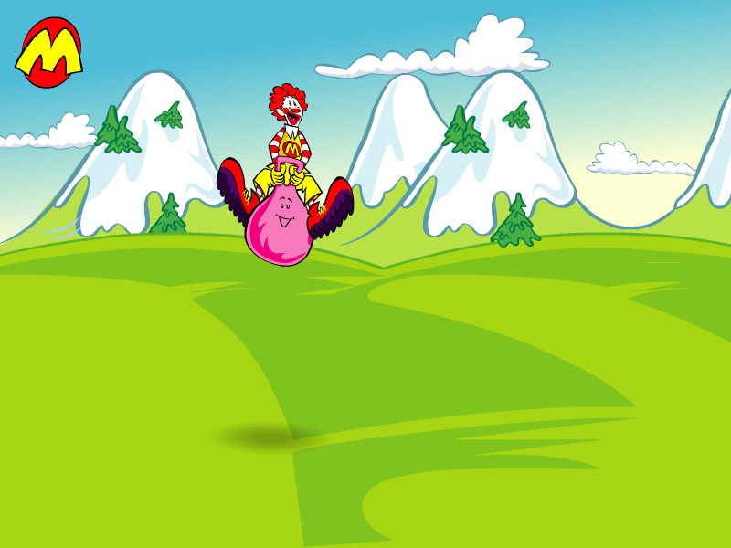
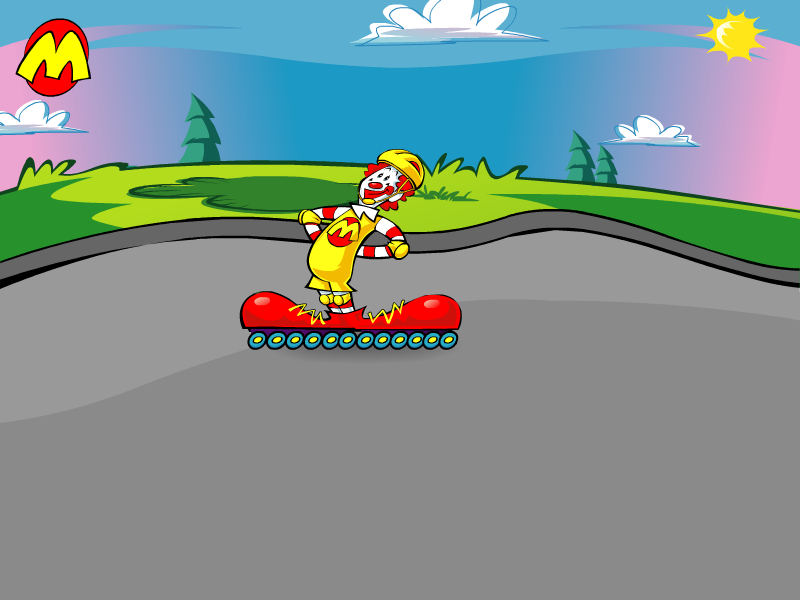

McDonald's Screensavers

Kids' Treat Menu Screensaver

DOWNLOAD
 .exe file zipped (432 KB)
.exe file zipped (432 KB)
mcdonalds.com.cn #1

DOWNLOAD
.exe file zipped (0.98 MB)
mcdonalds.com.cn #2

DOWNLOAD
.exe file zipped (799 KB)
mcdonalds.gr

DOWNLOAD
.exe file zipped (809 KB)
mcdonalds.com.my

Note: This is a 16-bit program and requires special programs to install on 64-bit Windows, such as otvdm.
DOWNLOAD
.exe file zipped (565 KB)
mcdonalds.pt #1

DOWNLOAD
.exe file zipped (662 KB)
mcdonalds.pt #2

DOWNLOAD
.exe file zipped (687 KB)
mcdonalds.com.tr

Note: .wav files need to be in the same directory as the .scr file or else the screensaver will only play the default Windows sound.
DOWNLOAD
13 .wav files + 1 .scr file zipped (500 KB)
mcdonalds.co.uk #1

DOWNLOAD
.exe file zipped (997 KB)
mcdonalds.co.uk #2

DOWNLOAD
.exe file zipped (992 KB)